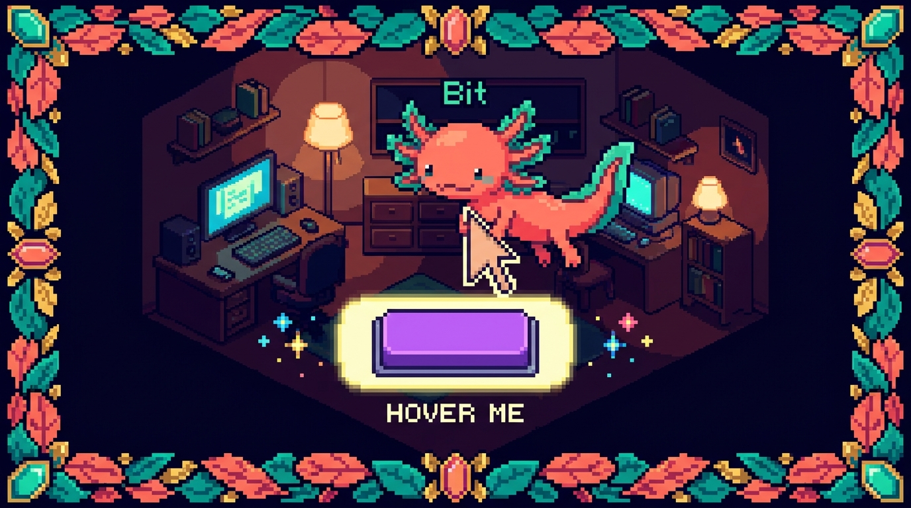

Capítulo 13 — Pseudo-clases y pseudo-elementos

Hasta ahora, cuando escribías CSS, le hablabas a elementos que existen tal cual en tu HTML: un
<button>, un<p>, un<a>. Pero la web es viva: el ratón pasa por encima de las cosas, los formularios se enfocan, las casillas se marcan, hay un primer hijo y un último hijo en cada lista. Las pseudo-clases te dejan reaccionar a todo eso. Y los pseudo-elementos te dejan dibujar trozos nuevos que ni siquiera están en el HTML, como ese iconito que ves al lado de cada recuadro de este mismo manual. Bit el ajolote está moviendo sus branquias de emoción: este capítulo es donde el CSS deja de ser una foto fija y empieza a sentirse interactivo. 🦎
1. ¿Qué es una pseudo-clase y por qué la necesitas?
Imagina que tienes un botón. En reposo es azul. Pero quieres que, cuando el usuario pase el ratón por encima, se ponga un poco más oscuro para avisar «sí, esto se puede pulsar». Ese «cuando pase el ratón por encima» no es un elemento distinto del HTML: es el mismo botón en un estado distinto. Las pseudo-clases existen justamente para apuntar a esos estados.
🟦 ¿Qué significa? — Pseudo-clase
Una pseudo-clase es una palabra clave que añades a un selector con dos puntos (
:) para apuntar a un elemento en un estado o posición especial, sin necesidad de añadir una clase en el HTML. «Pseudo» significa «falso» o «aparente»: parece una clase, pero no la escribes tú en elclass="...", la pone el navegador según lo que esté pasando. Para qué sirve: cambiar el aspecto de algo según lo que el usuario hace (pasar el ratón, hacer clic, enfocar) o según dónde está (el primero de la lista, el último, los pares). Dónde se usa en un repo real: entunal-digital/styles.css, los enlaces del menú y los botones de contacto usan:hoverpara reaccionar al ratón; enRachaSimpleyFaro, Tailwind genera estas mismas pseudo-clases bajo el capó cuando escribeshover:bg-blue-700.
La forma general es siempre la misma:
selector:pseudo-clase {
/* estilos que aplican solo cuando se cumple ese estado */
}
Fíjate en el detalle: un solo punto y coma de dos puntos (:). Más adelante verás los pseudo-elementos, que usan dos (::). Esa diferencia de uno contra dos es la pista visual para saber con cuál estás trabajando.
💡 Tip
No confundas la pseudo-clase
:hovercon una clase normal.hover. La primera lleva dos puntos y la controla el navegador; la segunda lleva un punto y la controlas tú en el HTML. Son cosas completamente distintas aunque se parezcan al escribirlas.
2. Estados del ratón y del teclado: :hover, :active, :focus
Estas tres son las pseudo-clases más usadas del mundo, porque hacen que tu página se sienta «viva» al tocarla.
🟦 ¿Qué significa? —
:hoverApunta a un elemento mientras el cursor del ratón está encima de él. En cuanto el ratón se va, deja de aplicar. Para qué sirve: dar retroalimentación visual de «esto es interactivo». Botones que se oscurecen, enlaces que se subrayan, tarjetas que se levantan un poquito. Dónde se usa en un repo real: en
tunal-digital/styles.csslos botones del menú cambian de color al pasar el ratón.🟦 ¿Qué significa? —
:activeApunta a un elemento en el instante exacto en que se está pulsando (el botón del ratón está hundido sobre él). Dura solo mientras mantienes el clic. Para qué sirve: dar la sensación de que el botón «se hunde» físicamente cuando lo aprietas. Dónde se usa en un repo real: en cualquier botón de
tunal-digital, para que el clic se sienta físico.🟦 ¿Qué significa? —
:focusApunta a un elemento que tiene el foco: es donde irían tus teclas si empiezas a escribir. Un
<input>enfocado, un botón al que llegaste con la tecla Tab, etc. Para qué sirve: mostrar dónde está «parado» el teclado. Es fundamental para personas que navegan sin ratón. Dónde se usa en un repo real: en los formularios de contacto detunal-digitaly en los campos de login deFaro(aunque ahí Tailwind lo escribe comofocus:ring-2).
Veamos los tres juntos sobre un botón de tunal-digital:
/* Estado normal, en reposo */
.boton-contacto {
background-color: #1d4ed8;
color: white;
padding: 12px 24px;
border: none;
border-radius: 8px;
transition: background-color 0.2s; /* suaviza el cambio */
}
/* El ratón está encima */
.boton-contacto:hover {
background-color: #1e40af; /* un azul más oscuro */
}
/* Justo mientras lo pulsas */
.boton-contacto:active {
background-color: #1e3a8a; /* aún más oscuro */
}
/* Llegaste con Tab o haciendo clic */
.boton-contacto:focus {
outline: 3px solid #93c5fd; /* un halo claro alrededor */
}
El transition de la primera regla es lo que hace que el cambio de color sea suave en vez de brusco. No es obligatorio, pero se siente mucho mejor.
⚠️ Cuidado
Nunca borres el indicador de foco con
outline: none;sin poner algo en su lugar. Si lo haces, las personas que navegan con teclado se quedan «ciegas»: no ven dónde están paradas. Si el contorno por defecto no te gusta, reemplázalo por uno propio, no lo elimines a secas.
3. El foco más educado: :focus-visible
Hay un problema clásico: cuando haces clic con el ratón en un botón, a veces aparece ese halo de foco, y se ve raro («yo solo hice clic, no quiero el halo»). Pero cuando llegas con Tab, sí lo quieres. ¿Cómo distinguir un caso del otro? Para eso nació :focus-visible.
🟦 ¿Qué significa? —
:focus-visibleEs como
:focus, pero el navegador solo lo aplica cuando tiene sentido mostrar el foco visualmente, normalmente al navegar con teclado, no al hacer clic con el ratón. Para qué sirve: mostrar el halo de accesibilidad a quien navega con teclado, sin molestar con halos a quien usa el ratón. Lo mejor de los dos mundos. Dónde se usa en un repo real: ideal para los botones y enlaces detunal-digital, donde quieres accesibilidad sin que cada clic deje un contorno colgando.
/* Quitamos el contorno feo en clics... */
.boton-contacto:focus {
outline: none;
}
/* ...pero lo devolvemos cuando llegan con teclado */
.boton-contacto:focus-visible {
outline: 3px solid #93c5fd;
outline-offset: 2px;
}
💡 Tip
Si tuvieras que elegir solo uno, hoy en día se recomienda estilizar
:focus-visibleantes que:focuspara el contorno de teclado. Es el estándar moderno y lo soportan todos los navegadores actuales. Bit lo llama «el foco con buenos modales». 🦎
4. Posición entre hermanos: :first-child, :last-child, :nth-child
Estas pseudo-clases no miran estados, sino lugares: ¿este elemento es el primero de su grupo?, ¿el último?, ¿uno de los pares? Para entenderlas, piensa en una lista de hijos dentro de un mismo padre, como los <li> dentro de un <ul>.
🟦 ¿Qué significa? —
:first-childApunta a un elemento solo si es el primer hijo de su contenedor padre. Para qué sirve: quitar el margen superior del primer elemento, redondear la esquina de arriba de una lista, casos donde «el primero es especial». Dónde se usa en un repo real: en una lista de servicios en
tunal-digital, para que el primer ítem no tenga línea separadora arriba.🟦 ¿Qué significa? —
:last-childIgual que el anterior, pero apunta al elemento solo si es el último hijo de su padre. Para qué sirve: quitar el borde inferior del último ítem de una lista, o el margen sobrante al final. Dónde se usa en un repo real: en
tunal-digital, para que el último ítem del menú no deje un separador colgando.🟦 ¿Qué significa? —
:nth-child(n)Apunta a hijos según un patrón numérico: el tercero, los pares, los impares, uno de cada tres... El patrón va entre paréntesis. Para qué sirve: filas alternadas de color en tablas («cebra»), cuadrículas con ritmo visual, resaltar cada cierto número. Dónde se usa en un repo real: en una tabla de precios o de proyectos en
tunal-digital, para pintar las filas pares de un gris suave y que se lean mejor.
Mira cómo se usan sobre una lista de servicios:
/* El primero no lleva línea arriba */
.servicios li:first-child {
border-top: none;
}
/* El último no lleva línea abajo */
.servicios li:last-child {
border-bottom: none;
}
/* Filas pares con fondo suave (efecto cebra) */
.tabla-proyectos tr:nth-child(even) {
background-color: #f3f4f6;
}
/* Filas impares en blanco (es el valor por defecto, pero queda explícito) */
.tabla-proyectos tr:nth-child(odd) {
background-color: white;
}
Las palabras even (pares) y odd (impares) son atajos cómodos. Pero :nth-child acepta fórmulas más potentes con la letra n, que representa «0, 1, 2, 3...» en orden:
/* Cada tercer elemento: el 3, el 6, el 9... */
.galeria div:nth-child(3n) {
margin-right: 0;
}
/* Los tres primeros: el 1, 2 y 3 */
.galeria div:nth-child(-n + 3) {
border: 2px solid gold;
}
⚠️ Cuidado
:nth-childcuenta todos los hermanos, no solo los del mismo tipo de etiqueta. Si dentro de un<div>mezclas un<h2>y varios<p>, el primer<p>podría ser en realidad el «segundo hijo» porque el<h2>ocupa la posición uno. Si eso te confunde, existe la prima:nth-of-type(), que cuenta solo elementos del mismo tipo.🔎 En tu código
En
RachaSimpleoFaro, que usan Tailwind, esto mismo se logra con utilidades comoodd:bg-gray-100yeven:bg-white, o confirst:mt-0ylast:mb-0. Por dentro Tailwind está generando exactamente estas pseudo-clases que acabas de ver. Saber qué hacen «por debajo» te ayuda a entender qué escribe Tailwind por ti.
5. Negar y filtrar: :not()
A veces quieres decir «todos estos, menos aquel». Esa palabra «menos» es :not().
🟦 ¿Qué significa? —
:not(selector)Apunta a todos los elementos que NO coinciden con el selector que pones dentro del paréntesis. Es una negación. Para qué sirve: aplicar un estilo a un grupo excepto a algunos casos, sin tener que crear una clase aparte para los excluidos. Dónde se usa en un repo real: en
tunal-digital, para poner un margen a todos los botones menos al último, o estilizar todos los enlaces menos los que están deshabilitados.
/* Todos los botones llevan margen a la derecha... menos el último */
.barra-botones button:not(:last-child) {
margin-right: 12px;
}
/* Todos los enlaces se subrayan al pasar el ratón, menos los desactivados */
nav a:not(.desactivado):hover {
text-decoration: underline;
}
Fíjate en algo bonito: dentro de :not() puedes meter otra pseudo-clase (:not(:last-child)) o una clase normal (:not(.desactivado)). Se combinan sin problema.
💡 Tip
:not(:last-child)es uno de los trucos más útiles que aprenderás. Te ahorra el clásico problema del «espacio de más al final»: pones la separación a todos menos al último, y queda perfecto sin retoques manuales.
6. Estados de formulario: :checked (y amigos)
Los formularios tienen estados propios que el HTML conoce: ¿está marcada esta casilla?, ¿está deshabilitado este campo? Las pseudo-clases te dejan reaccionar a ellos.
🟦 ¿Qué significa? —
:checkedApunta a una casilla (
checkbox), un botón de radio o una opción que está marcada/seleccionada en ese momento. Para qué sirve: cambiar el aspecto de lo que rodea a una casilla marcada, hacer interruptores tipo «switch» solo con CSS, resaltar la opción elegida. Dónde se usa en un repo real: en un formulario detunal-digitalcon casillas «Quiero recibir novedades», para resaltar visualmente la opción cuando el usuario la activa.
/* La etiqueta que sigue a un radio marcado se pone en negrita y azul */
input[type="radio"]:checked + label {
font-weight: bold;
color: #1d4ed8;
}
El + label de ahí significa «el <label> que viene justo después»: es un selector hermano que verás más a fondo en otro capítulo. Por ahora quédate con la idea: cuando el radio se marca, su etiqueta vecina cambia.
🔎 En tu código
En
FaroyRachaSimple, los formularios suelen manejarse con estado de React (useState) en lugar de depender solo de CSS, porque necesitan guardar datos en Supabase. Aun así,:checkedsigue siendo útil para el aspecto puramente visual de la casilla, mientras React se encarga de la lógica. CSS para verse bien, React para recordar qué pasó.
Hay más pseudo-clases de formulario que conviene que reconozcas aunque no las domines hoy: :disabled (campo desactivado), :enabled (activado), :required (obligatorio), :valid y :invalid (si lo escrito cumple las reglas). Todas siguen la misma lógica de «reacciona a un estado del campo».
7. Pseudo-elementos: dibujar lo que no está en el HTML
Cambiamos de tema, y este es el favorito de Bit. Hasta ahora reaccionábamos a elementos que ya existían. Los pseudo-elementos hacen algo distinto: crean o apuntan a partes que no escribiste como etiquetas.
🟦 ¿Qué significa? — Pseudo-elemento
Es una palabra clave que se añade a un selector con dos dos puntos (
::) para estilizar una parte específica de un elemento, o para inventar contenido nuevo que no existe en el HTML. El navegador lo «materializa» por ti. Para qué sirve: poner iconos decorativos, comillas, líneas, o estilizar partes internas como el texto de ayuda de un input o el texto que el usuario selecciona con el ratón. Dónde se usa en un repo real: en el propiosite/estilos.cssde este manual, los iconos que ves junto a cada recuadro (💡, ⚠️, 🔎) se ponen con::before. ¡Estás leyendo pseudo-elementos ahora mismo!💡 Tip
Regla mnemotécnica de Bit: pseudo-CLASE con un dos-puntos (
:hover), porque reacciona a algo que ya está. Pseudo-ELEMENTO con dos dos-puntos (::before), porque «duplicas» los dos puntos para «crear» algo nuevo. Un punto = estado, doble punto = pieza nueva. 🦎
8. ::before y ::after: los gemelos decoradores
Estos dos son los pseudo-elementos estrella. Crean una cajita invisible antes o después del contenido de un elemento, y tú la rellenas.
🟦 ¿Qué significa? —
::beforeInserta un trozo de contenido justo antes del contenido real de un elemento, sin que tengas que escribirlo en el HTML. Para qué sirve: iconos a la izquierda de un texto, viñetas personalizadas, comillas de apertura, etiquetas decorativas. Dónde se usa en un repo real: los recuadros de este manual usan
::beforepara colocar el emoji de icono al inicio de cada caja.🟦 ¿Qué significa? —
::afterIgual que
::before, pero inserta el contenido justo después del contenido real del elemento. Para qué sirve: flechitas al final de un enlace, líneas decorativas de cierre, el símbolo de «enlace externo». Dónde se usa en un repo real: entunal-digital, para añadir una flecha «→» al final de los enlaces de «Ver más» sin tocar el HTML.
Y aquí llega el detalle más importante de todos:
🟦 ¿Qué significa? —
contentEs la propiedad CSS que dice qué texto o símbolo va a mostrar un
::beforeo un::after. Sincontent, el pseudo-elemento no aparece, ni siquiera vacío. Para qué sirve: definir el contenido de los pseudo-elementos. Puede ser un texto, un emoji, comillas, o""(vacío) si solo lo quieres como adorno geométrico. Dónde se usa en un repo real: ensite/estilos.css, cada recuadro define algo comocontent: "💡"para su icono.
Veamos cómo el manual pone el icono de los recuadros:
/* La cajita de "Tip" */
.recuadro-tip {
position: relative;
padding-left: 48px; /* dejamos hueco a la izquierda para el icono */
background-color: #eff6ff;
border-left: 4px solid #3b82f6;
}
/* El icono, creado con ::before */
.recuadro-tip::before {
content: "💡"; /* SIN esto, no aparece nada */
position: absolute;
left: 16px;
top: 16px;
font-size: 20px;
}
Lo mágico: el emoji 💡 no está en el HTML. El HTML solo tiene <div class="recuadro-tip">...texto...</div>. El icono lo «inventa» el CSS. Si mañana quieres cambiar todos los iconos de tip a 📌, cambias una sola línea y se actualizan todos. Eso es poder.
Otro ejemplo, la flecha al final de un enlace:
.ver-mas::after {
content: " →"; /* un espacio y una flecha */
font-weight: bold;
}
⚠️ Cuidado
Si olvidas la propiedad
content, tu::beforeo::afterno se mostrará en absoluto, aunque le pongas colores, tamaños y bordes. Es el error número uno de los principiantes con pseudo-elementos. Cuando algo «no aparece», lo primero que revisa Bit es si faltacontent. Para adornos puramente geométricos (una línea, un cuadrito), usacontent: "";con las comillas vacías: vacío, pero presente.💡 Tip
El contenido que metes con
contentes decorativo y los lectores de pantalla suelen ignorarlo. Por eso es perfecto para iconos bonitos, pero nunca pongas ahí información importante (como un precio o una instrucción). El texto que importa va en el HTML de verdad.
9. Estilizar partes internas: ::placeholder y ::selection
Estos dos no crean contenido nuevo: apuntan a partes que ya existen «dentro» de un elemento, pero que normalmente no podrías tocar.
🟦 ¿Qué significa? —
::placeholderApunta al texto de ayuda gris que aparece dentro de un campo de formulario cuando está vacío (el
placeholder="Tu correo"). Para qué sirve: cambiar el color, la cursiva o el tamaño de ese texto guía, para que combine con tu diseño. Dónde se usa en un repo real: en los formularios de contacto detunal-digitaly en los campos de login deFaro, para que el texto guía se vea acorde a la marca.
.campo-formulario::placeholder {
color: #9ca3af; /* gris suave */
font-style: italic; /* en cursiva */
}
🟦 ¿Qué significa? —
::selectionApunta al texto que el usuario ha resaltado con el ratón (cuando arrastras para seleccionar y se pone de color). Para qué sirve: personalizar el color del resaltado para que use los colores de tu marca en vez del azul por defecto del navegador. Dónde se usa en un repo real: en
tunal-digitalo en elsite/estilos.cssdel manual, para que al seleccionar texto el resaltado sea del color de la marca.
::selection {
background-color: #1d4ed8; /* fondo de la marca */
color: white; /* texto en blanco al resaltar */
}
🔎 En tu código
Con Tailwind (en
RachaSimpleyFaro) estos pseudo-elementos también están disponibles: escribesplaceholder:text-gray-400oselection:bg-blue-700. De nuevo, Tailwind es solo un atajo para escribir el mismo CSS que viste arriba. El concepto es idéntico; cambia la forma de escribirlo.
10. Encadenar y combinar: el poder de juntarlo todo
Lo más bonito es que estas piezas se combinan. Puedes pegar varias pseudo-clases, o mezclar pseudo-clase con pseudo-elemento:
/* Un enlace que NO esté deshabilitado, al pasar el ratón,
muestra una flecha animada al final */
nav a:not(.desactivado):hover::after {
content: " →";
margin-left: 4px;
}
/* El primer botón de la barra, al enfocarse con teclado */
.barra button:first-child:focus-visible {
outline: 3px solid #93c5fd;
}
Leído en voz alta, el primero dice: «para los enlaces de nav que no tengan la clase desactivado, cuando el ratón esté encima, dibuja una flecha después». Cada pieza se va sumando como ladritos. No te asustes por la longitud: se lee de izquierda a derecha como una frase.
💡 Tip
Si una regla se vuelve tan larga que no la entiendes ni tú, probablemente sea señal de que conviene añadir una clase normal en el HTML para simplificar. Las pseudo-clases son potentes, pero la claridad siempre gana. Bit prefiere tres reglas legibles que una imposible. 🦎
✅ Checklist — ¿ya domino esto?
- [ ] Sé explicar qué es una pseudo-clase y por qué se escribe con un dos-puntos.
- [ ] Distingo
:hover,:activey:focus, y sé cuándo aplica cada uno. - [ ] Entiendo por qué
:focus-visiblees más amable que:focuspara el contorno de teclado. - [ ] Nunca borro el indicador de foco sin poner uno propio en su lugar.
- [ ] Sé usar
:first-child,:last-childy:nth-child(even/odd)para posiciones entre hermanos. - [ ] Entiendo que
:not()sirve para excluir y que puede llevar otra pseudo-clase dentro. - [ ] Sé que
:checkedapunta a casillas y radios marcados. - [ ] Distingo pseudo-elemento (dos dos-puntos
::) de pseudo-clase (uno:). - [ ] Sé que
::beforey::afternecesitancontento no aparecen. - [ ] Entiendo que
::placeholdery::selectionestilizan partes internas existentes. - [ ] Reconozco que en Tailwind (
hover:,first:,placeholder:) esto es el mismo CSS por debajo.
🧪 Ejercicios
-
De memoria (sin compu). Escribe en un papel la diferencia entre
:hover,:activey:focus, con un ejemplo de cuándo se activa cada uno. Luego explica por qué::beforelleva dos dos-puntos y:hoversolo uno. -
💻 Botón vivo en tunal-digital. En
styles.css, toma un botón existente y dale los tres estados: un color base, uno más oscuro en:hover, otro aún más oscuro en:active, y unoutlineclaro en:focus-visible. Añadetransition: background-color 0.2s;y observa la diferencia con y sin él. -
💻 Efecto cebra. Crea (o usa) una tabla de proyectos en
tunal-digitaly pinta las filas pares de un gris suave contr:nth-child(even). Comprueba que las impares quedan en blanco. Bonus: resalta solo la primera fila con:first-child. -
💻 El truco del último. En una barra con varios botones, dale
margin-righta todos menos al último usandobutton:not(:last-child). Confirma que no queda espacio sobrante al final. -
💻 Icono con
::before. Recrea un recuadro tipo «Tip» como los de este manual: un<div>con clase, fondo suave, borde izquierdo de color, y un icono emoji puesto con::beforeycontent. Luego prueba a borrar la líneacontenty observa cómo el icono desaparece por completo: así interiorizas por qué es obligatoria. -
💻 Marca tu selección. Añade a
styles.cssuna regla::selectionque cambie el color de fondo al resaltar texto, usando un color de tu marca. Selecciona texto con el ratón en tu página y comprueba que el resaltado ya no es el azul por defecto del navegador.
Lo lograste. Hoy tu CSS dejó de ser una estatua y aprendió a reaccionar: sabe cuándo lo tocan, sabe quién va primero y quién va último, y hasta sabe dibujar iconos que no existían en el HTML. La próxima vez que veas el 💡 al lado de un recuadro, ya sabes el secreto: es un
::beforecon sucontenthaciendo su trabajo en silencio. Bit chapotea de orgullo. Nos vemos en el siguiente capítulo. 🦎